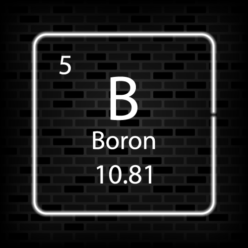

Атомный номер бора — 5. Ядро этого атома состоит из шести нейтронов,
пяти положительно заряженных протонов и пяти электронов. В кристаллической форме бор имеет тёмный цвет, он хрупкий и блестящий;
в аморфной форме бор представляет собой коричневый порошок. Элементарный бор — это металлоид, который встречается в земной коре.Бор имеет множество промышленных применений, к ним относятся следующие:
Соединения бора являются важными ингредиентами в текстильной промышленности.
Он также используется для изготовления термостойких стекол и стекловолокна.
Бор в форме ортоборной кислоты используется для производства косметических средств.
Соединения бора, бораты, используются в стиральных порошках в качестве осветлителей. Они также являются отбеливающими средствами.
Также в лакокрасочной промышленности.
Бор используется в аккумуляторах для увеличения срока службы, производительности, эффективности и т. д.

кремний имеет кубическую алмазную кристаллическую решётку, которая придаёт кремнию определённую твёрдость и прочность.кремний является полупроводником. Он обладает средней электропроводностью. Это делает его пригодным для использования в электронике.ремний является ключевым элементом в производстве полупроводников, таких как наборы микросхем, транзисторы, интегральные схемы и микропроцессоры.кремний используется в процессе производства сплавов;Силикон получают из природных силикатов, а также в результате плавления песка.диоксид кремния (кремнезём) необходим для производства стекла и керамики.Карбид кремния, полупроводниковый сплав кремния и углерода, известен своей высокой износостойкостью и хорошей теплопроводностью.

Германий — хрупкий, серебристо-белый неметалл. Кристаллическая решётка устойчивой при нормальных условиях аллотропной модификации — кубическая типа алмаза.Благодаря прозрачности в инфракрасной области спектра металлический германий сверхвысокой чистоты имеет стратегическое значение в производстве оптических элементов инфракрасной оптики: линз, призм, оптических окон датчиков.Наиболее заметные физические характеристики оксида германия (GeO2) — его высокий показатель преломления и низкая оптическая дисперсия.Тетрахлорид германия используется в производстве оптоволокна, так как образующийся в процессе разложения этого соединения диоксид германия удобен для данного применения благодаря своему высокому показателю преломления и низкому оптическому рассеиванию и поглощению.

Мышьяк — известный токсичный тяжёлый металл. Он встречается в природе во многих минералах, обычно в сочетании с серной кислотой и металлами, но также и в виде чистого элементарного кристалла. Он имеет различные аллотропные модификации, но только серая форма, имеющая металлический блеск, важна для промышленности.Сульфидные соединения мышьяка — аурипигмент и реальгар — используются в живописи в качестве красок и в кожевенной отрасли промышленности в качестве средств для удаления волос с кожи.Некоторые соединения мышьяка в очень малых дозах применялись в качестве препаратов для борьбы с малокровием и рядом других заболеваний, так как оказывают клинически заметное стимулирующее влияние на ряд систем организма, в частности, на красный костный мозг и ЦНС.

Сурьма в свободном состоянии образует серебристо-белые кристаллы с металлическим блеском, плотность — 6,68 г/см³. Напоминая внешним видом металл, кристаллическая сурьма обладает большей хрупкостью и меньшей тепло- и электропроводностью. В отличие от большинства других металлов, при переходе в твёрдое состояние из расплава (кристаллизации) расширяется.Сурьма всё больше применяется в полупроводниковой промышленности при производстве диодов, инфракрасных детекторов, устройств с эффектом Холла. Является компонентом свинцовых сплавов, увеличивающим их твёрдость и механическую прочность. Область применения включает:
батареи;
антифрикционные сплавы;
типографские сплавы;
стрелковое оружие и трассирующие пули;
оболочки кабелей;
спички;
лекарства, противопротозойные средства;
пайка — некоторые бессвинцовые припои содержат 5 % Sb;
использование в линотипных печатных машинах.

Теллур — хрупкое серебристо-белое вещество с металлическим блеском. В тонких слоях на просвет красно-коричневый, в парах — золотисто-жёлтый. При нагревании приобретает пластичность. Кристаллическая решётка — гексагональная. Теллур применяется в производстве сплавов свинца с повышенной пластичностью и прочностью (применяемых, например, при производстве кабелей). При введении 0,05 % теллура потери свинца на растворение под воздействием серной кислоты снижаются в 10 раз, и это используется при производстве свинцово-кислотных аккумуляторов. Также важно то обстоятельство, что легированный теллуром свинец при обработке пластической деформацией не разупрочняется, и это позволяет вести технологию изготовления токоотводов аккумуляторных пластин методом холодной высечки и значительно увеличить срок службы и удельные характеристики аккумулятора.